Rebuilt against the correctly named SOURCE_*_FULL library in Drive. Every match below is verified by frame-signature correlation between the delivered V16 frames and the source file — the score is that correlation, not a guess. Rows that did not clear the bar are marked UNRESOLVED with the reference frame and the closest candidate, so nothing is invented. All clips: no audio, no VO, no music, no captions, no graphics, cut to the exact shot length at 30 fps.
| Row | V16 in→out | Length | Storyboard shot | Frame in V16 | Raw source | Source in→out | Match | Raw download |
|---|---|---|---|---|---|---|---|---|
| 1 | 0.00 → 2.50 | 2.50s / 75f | LLA logo opening | 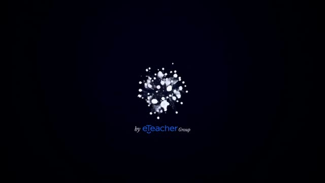 | SOURCE_particle_burst_FULL.mp4full original in Drive | 1.50s → 4.00s | EXACT 95.0% frame match | Download raw cut 2.50s / 75f · no audio |
| 2 | 2.50 → 5.00 | 2.50s / 75f | Eye macro hook - VO Trying to fix your health | 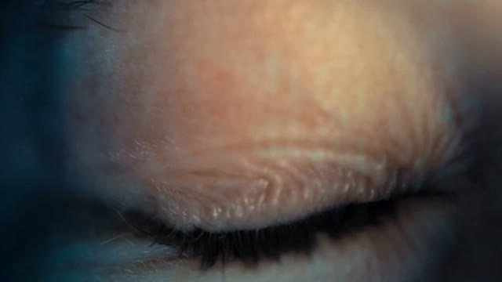 | SOURCE_eye_macro_opening_FULL.mp4full original in Drive | 0.00s → 2.50s | EXACT 99.6% frame match | Download raw cut 2.52s / 76f · no audio |
| 3 | 5.00 → 9.30 | 4.30s / 129f | Courtney on camera | 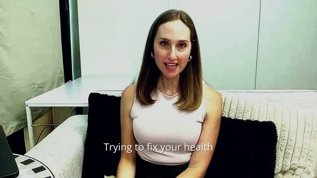 | COURTNEY_RAW_FRONT_CAMERA_PRO.mp4 | 40.00s → 44.30s | EXACT 99.1% frame match | Download raw cut 4.31s / 129f · no audio |
| 4 | 9.30 → 12.50 | 3.20s / 96f | Influencer montage | 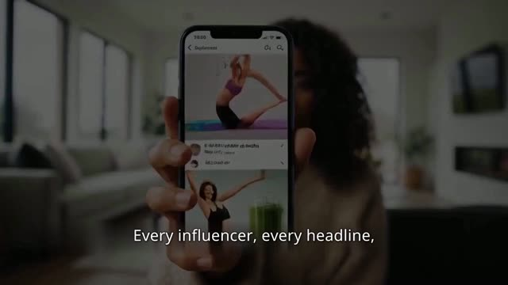 | No source file in the library. Closest candidate: SOURCE_protocol_wheel_alt_FULL.mp4 at 36.7% — below the accept bar, so it is not being passed off as the source.Needs: original screen recording / generated clip for this shot. | — | UNRESOLVED best 36.7% | reference frame only |
| 5 | 12.50 → 15.50 | 3.00s / 90f | Doom-scroll b-roll | 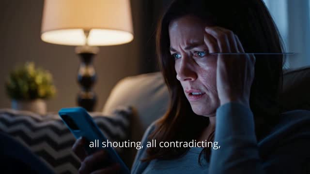 | No source file in the library. Closest candidate: SOURCE_livingroom_empty_FULL.mp4 at 39.0% — below the accept bar, so it is not being passed off as the source.Needs: original screen recording / generated clip for this shot. | — | UNRESOLVED best 39.0% | reference frame only |
| 6 | 15.50 → 17.40 | 1.90s / 57f | Courtney on camera | COURTNEY_RAW_FRONT_CAMERA_PRO.mp4 | 1623.50s → 1625.40s | LIKELY 75.4% frame match | Download raw cut 1.94s / 58f · no audio | |
| 7 | 17.40 → 20.90 | 3.50s / 105f | Card Your direct path to a longer better life | 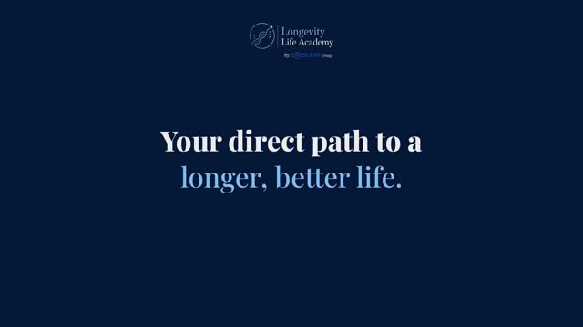 | Graphic card — not footage. Rebuild from the card pack (navy #061738 / blue #74BCFA, serif, small LLA mark top-centre). | — | CARD | open card pack |
| 8 | 20.90 → 27.70 | 6.80s / 204f | Courtney on camera | COURTNEY_RAW_FRONT_CAMERA_PRO.mp4 | 62.00s → 68.80s | EXACT 98.7% frame match | Download raw cut 6.81s / 204f · no audio | |
| 9 | 27.70 → 29.20 | 1.50s / 45f | Card Your own blueprint | Graphic card — not footage. Rebuild from the card pack (navy #061738 / blue #74BCFA, serif, small LLA mark top-centre). | — | CARD | open card pack | |
| 10 | 29.20 → 33.00 | 3.80s / 114f | Courtney on camera | COURTNEY_RAW_FRONT_CAMERA_PRO.mp4 | 131.50s → 135.30s | EXACT 99.2% frame match | Download raw cut 3.81s / 114f · no audio | |
| 11 | 33.00 → 34.00 | 1.00s / 30f | Card Master the six pillars appears once | Graphic card — not footage. Rebuild from the card pack (navy #061738 / blue #74BCFA, serif, small LLA mark top-centre). | — | CARD | open card pack | |
| 12 | 34.00 → 35.50 | 1.50s / 45f | Pillar intro your numbers CGM press | No source file in the library. Closest candidate: COURTNEY_RAW_FRONT_CAMERA_PRO.mp4 at 23.2% — below the accept bar, so it is not being passed off as the source.Needs: original screen recording / generated clip for this shot. | — | UNRESOLVED best 23.2% | reference frame only | |
| 13 | 35.50 → 37.00 | 1.50s / 45f | Pillar Nutrition | 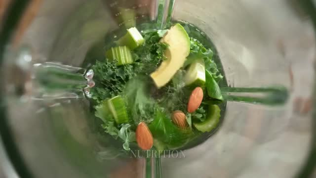 | SOURCE_nutrition_avocado_shake_4K_FULL.mp4full original in Drive | 2.00s → 3.50s | LIKELY 89.8% frame match | Download raw cut 1.50s / 45f · no audio |
| 14 | 37.00 → 38.20 | 1.20s / 36f | Pillar Sleep | No source file in the library. Closest candidate: SOURCE_nutrition_avocado_shake_4K_FULL.mp4 at 48.9% — below the accept bar, so it is not being passed off as the source.Needs: original screen recording / generated clip for this shot. | — | UNRESOLVED best 48.9% | reference frame only | |
| 15 | 38.20 → 39.00 | 0.80s / 24f | Pillar Movement | 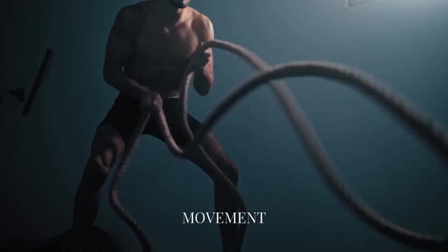 | SOURCE_movement_battleropes_FULL.mp4full original in Drive | 2.50s → 3.30s | EXACT 96.7% frame match | Download raw cut 0.80s / 24f · no audio |
| 16 | 39.00 → 41.20 | 2.20s / 66f | Pillar Supplementation | SOURCE_supplements_capsules_4K_FULL.mp4full original in Drive | 5.00s → 7.20s | EXACT 99.3% frame match | Download raw cut 2.21s / 66f · no audio | |
| 17 | 41.20 → 42.30 | 1.10s / 33f | Pillar Protect your heart | No source file in the library. Closest candidate: SOURCE_protocol_wheel_alt_FULL.mp4 at 30.3% — below the accept bar, so it is not being passed off as the source.Needs: original screen recording / generated clip for this shot. | — | UNRESOLVED best 30.3% | reference frame only | |
| 18 | 42.30 → 44.40 | 2.10s / 63f | Know your numbers graph | 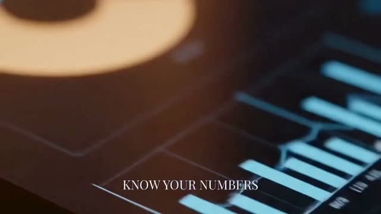 | No source file in the library. Closest candidate: SOURCE_RAW_Courtney_testimonials_session.mp4 at 33.5% — below the accept bar, so it is not being passed off as the source.Needs: original screen recording / generated clip for this shot. | — | UNRESOLVED best 33.5% | reference frame only |
| 19 | 44.40 → 49.40 | 5.00s / 150f | Courtney on camera real take | COURTNEY_RAW_FRONT_CAMERA_PRO.mp4 | 163.50s → 168.50s | EXACT 99.9% frame match | Download raw cut 5.00s / 150f · no audio | |
| 20 | 49.40 → 52.50 | 3.10s / 93f | Courtney on camera not-opinions | COURTNEY_RAW_FRONT_CAMERA_PRO.mp4 | 168.50s → 171.60s | EXACT 100.0% frame match | Download raw cut 3.12s / 94f · no audio | |
| 21 | 52.70 → 54.00 | 1.30s / 39f | Green pipette slow | No source file in the library. Closest candidate: SOURCE_cgm_phone_and_arm_FULL.mp4 at 36.2% — below the accept bar, so it is not being passed off as the source.Needs: original screen recording / generated clip for this shot. | — | UNRESOLVED best 36.2% | reference frame only | |
| 22 | 54.00 → 56.00 | 2.00s / 60f | Courtney Harvard line on camera | COURTNEY_RAW_FRONT_CAMERA_PRO.mp4 | 173.00s → 175.00s | EXACT 98.5% frame match | Download raw cut 2.00s / 60f · no audio | |
| 23 | 56.00 → 58.20 | 2.20s / 66f | Food flatlay | 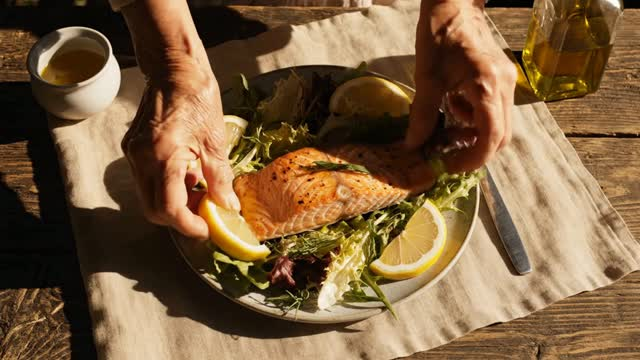 | No source file in the library. Closest candidate: SOURCE_berries_food_FULL.mp4 at 25.9% — below the accept bar, so it is not being passed off as the source.Needs: original screen recording / generated clip for this shot. | — | UNRESOLVED best 25.9% | reference frame only |
| 24 | 58.20 → 59.50 | 1.30s / 39f | Courtney five of these very habits | 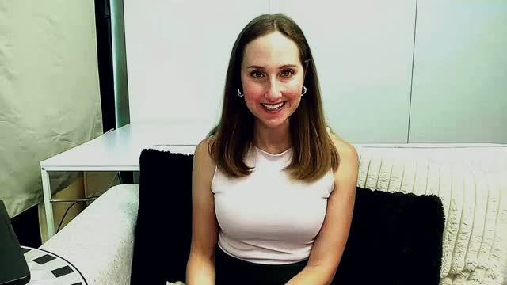 | COURTNEY_RAW_FRONT_CAMERA_PRO.mp4 | 181.00s → 182.30s | EXACT 99.2% frame match | Download raw cut 1.31s / 39f · no audio |
| 25 | 59.50 → 62.50 | 3.00s / 90f | Card Five habits by age 40 plus 14 extra years | Graphic card — not footage. Rebuild from the card pack (navy #061738 / blue #74BCFA, serif, small LLA mark top-centre). | — | CARD | open card pack | |
| 26 | 62.50 → 64.70 | 2.20s / 66f | Card 18 Live Session Course | Graphic card — not footage. Rebuild from the card pack (navy #061738 / blue #74BCFA, serif, small LLA mark top-centre). | — | CARD | open card pack | |
| 27 | 64.70 → 66.50 | 1.80s / 54f | Zoom live session | No source file in the library. Closest candidate: SOURCE_live_it_well_endplate_FULL.mp4 at 59.2% — below the accept bar, so it is not being passed off as the source.Needs: original screen recording / generated clip for this shot. | — | UNRESOLVED best 59.2% | reference frame only | |
| 28 | 66.50 → 68.00 | 1.50s / 45f | Course platform collage | 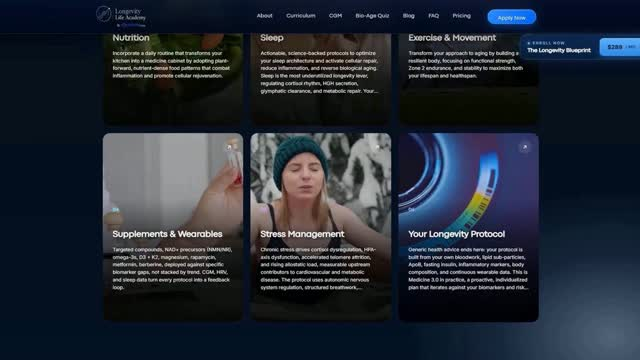 | No source file in the library. Closest candidate: SOURCE_particle_burst_FULL.mp4 at 60.4% — below the accept bar, so it is not being passed off as the source.Needs: original screen recording / generated clip for this shot. | — | UNRESOLVED best 60.4% | reference frame only |
| 29 | 68.00 → 69.40 | 1.40s / 42f | Website CGM section | 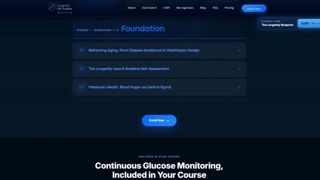 | No source file in the library. Closest candidate: SOURCE_LLA_outro_card_FULL.mp4 at 38.5% — below the accept bar, so it is not being passed off as the source.Needs: original screen recording / generated clip for this shot. | — | UNRESOLVED best 38.5% | reference frame only |
| 30 | 69.40 → 72.50 | 3.10s / 93f | Card Your biomarkers Your data | Graphic card — not footage. Rebuild from the card pack (navy #061738 / blue #74BCFA, serif, small LLA mark top-centre). | — | CARD | open card pack | |
| 31 | 72.50 → 73.90 | 1.40s / 42f | CGM sensor pop | 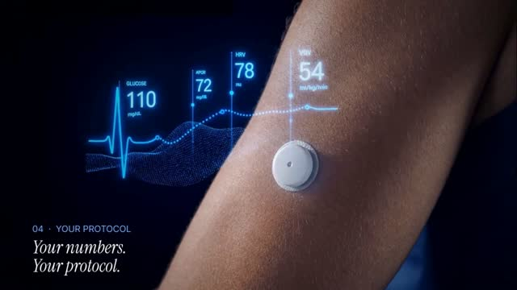 | SOURCE_cgm_arm_numbers_8K_HAS_BURNED_TEXT.mp4full original in Drive | 0.50s → 1.90s | EXACT 99.5% frame match | Download raw cut 1.40s / 42f · no audio |
| 32 | 74.00 → 75.00 | 1.00s / 30f | Protocol wheel | 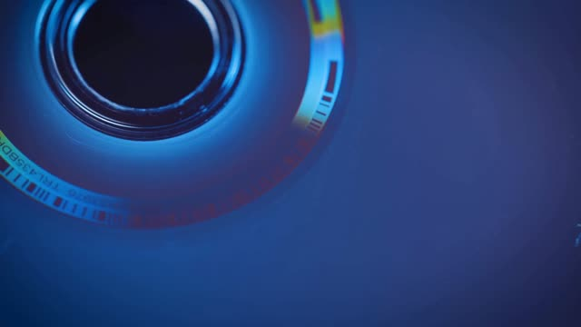 | SOURCE_blue_disc_macro_FULL.mp4full original in Drive | 1.50s → 2.50s | EXACT 99.2% frame match | Download raw cut 1.00s / 30f · no audio |
| 33 | 75.00 → 75.90 | 0.90s / 27f | Blueprint page | SOURCE_protocol_wheel_alt_FULL.mp4full original in Drive | 1.00s → 1.90s | LIKELY 86.8% frame match | Download raw cut 0.92s / 28f · no audio | |
| 34 | 75.90 → 77.40 | 1.50s / 45f | Instructors page | No source file in the library. Closest candidate: SOURCE_cgm_phone_and_arm_FULL.mp4 at 34.7% — below the accept bar, so it is not being passed off as the source.Needs: original screen recording / generated clip for this shot. | — | UNRESOLVED best 34.7% | reference frame only | |
| 35 | 77.40 → 80.70 | 3.30s / 99f | Courtney sign-off | LIPFIX_S4_VIDEO.mp4 | 0.00s → 3.30s | EXACT 99.2% frame match | Download raw cut 3.27s / 98f · no audio | |
| 36 | 80.70 → 81.90 | 1.20s / 36f | Seat in light | No source file in the library. Closest candidate: OUTRO_ROSEN.mp4 at 51.4% — below the accept bar, so it is not being passed off as the source.Needs: original screen recording / generated clip for this shot. | — | UNRESOLVED best 51.4% | reference frame only | |
| 37 | 81.90 → 84.90 | 3.00s / 90f | CGM arm b-roll | 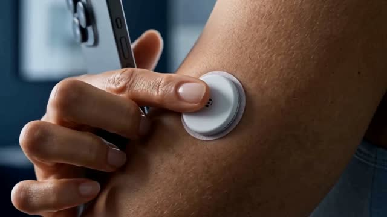 | SOURCE_cgm_press_alt_FULL.mp4full original in Drive | 0.00s → 3.00s | EXACT 92.3% frame match | Download raw cut 3.00s / 90f · no audio |
| 38 | 84.90 → 86.60 | 1.70s / 51f | Zoom laptop scene | SOURCE_cgm_press_on_arm_FULL.mp4full original in Drive | 3.50s → 5.20s | EXACT 99.7% frame match | Download raw cut 1.71s / 51f · no audio | |
| 39 | 86.60 → 90.00 | 3.40s / 102f | Outro Enroll now 4.6 on Trustpilot | SOURCE_LLA_outro_card_FULL.mp4full original in Drive | 0.00s → 3.40s | LIKELY 90.7% frame match | Download raw cut 3.40s / 102f · no audio | |
| 40 | 90.00 → 95.10 | 5.10s / 153f | End card dancing man silent tail | 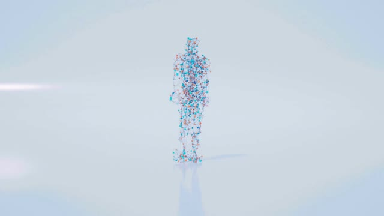 | SOURCE_dancing_man_endcard_FULL.mp4full original in Drive | 0.00s → 5.10s | EXACT 96.6% frame match | Download raw cut 5.00s / 150f · no audio |
Verified: 21 raw cuts published, all confirmed live, correct duration and zero audio streams. 6 rows are graphic cards. 13 rows have no matching original anywhere in the supplied library. Row 40 source is 5.00s against a 5.10s slot — 3 frames short, flagged rather than stretched.